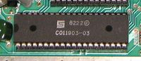
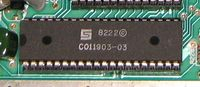

a Carol Shaw story
or being a programmer in early 80-ties
- Maciek Małecki, 2020 -
Why?
Maybe you like history?
How does a machine work?
How can a JIT produce faster code than GCC?
Why reactive systems perform better than multithreaded?
Carol Shaw

https://info.umkc.edu/unews/celebrating-women-in-stem-carol-shaw/
River Raid for Atari VCS (1982)


WIKI Commons, PD

 

only 128 bytes of RAM!
- Color graphics chip (TIA) but no framebuffer
- RAM-less design
- 20-bit register for halve of the playfield
- 2 8-bit registers for players, 2 1-bit missiles, 1 1-bit ball
- Must be rewritten every scan line


MOS 6502

Chuck Peddle
1937 - 2019
Machine code
169 0 141 32 208 169 1 141 32 208 76 0 192
Syntax
169 0
141 32 208
169 1
141 32 208
76 0 192
$A9 $00
$8D $20 $D0
$A9 $01
$8D $20 $D0
$4C $00 $C0
Microprocessor block diagram

Example
LDA - LoaD Accumulator
LDA value
Addressing modes (6502)
+----------------+-----------------------+---------+---------+----------+
| Addressing Mode| Assembly Language Form| OP CODE |No. Bytes|No. Cycles|
+----------------+-----------------------+---------+---------+----------+
| Immediate | LDA #$FF | $A9 | 2 | 2 |
| ZeroPage | LDA $FF | $A5 | 2 | 3 |
| ZeroPage,X | LDA $FF,X | $B5 | 2 | 4 |
| Absolute | LDA $FFFF | $AD | 3 | 4 |
| Absolute,X | LDA $FFFF,X | $BD | 3 | 4* |
| Absolute,Y | LDA $FFFF,Y | $B9 | 3 | 4* |
| (Indirect,X) | LDA ($FF,X) | $A1 | 2 | 6 |
| (Indirect),Y | LDA ($FF),Y | $B1 | 2 | 5* |
+----------------+-----------------------+---------+---------+----------+
*add extra 1 cycle if crossing 256b page boundary
Instruction set (6502)
ADC Add Memory to Accumulator with Carry LDA Load Accumulator with Memory
AND "AND" Memory with Accumulator LDX Load Index X with Memory
ASL Shift Left One Bit (Memory or Accumulator) LDY Load Index Y with Memory
LSR Shift Right One Bit (Memory or Accumulator)
BCC Branch on Carry Clear
BCS Branch on Carry Set NOP No Operation
BEQ Branch on Result Zero
BIT Test Bits in Memory with Accumulator ORA "OR" Memory with Accumulator
BMI Branch on Result Minus
BNE Branch on Result not Zero PHA Push Accumulator on Stack
BPL Branch on Result Plus PHP Push Processor Status on Stack
BRK Force Break PLA Pull Accumulator from Stack
BVC Branch on Overflow Clear PLP Pull Processor Status from Stack
BVS Branch on Overflow Set
ROL Rotate One Bit Left (Memory or Accumulator)
CLC Clear Carry Flag ROR Rotate One Bit Right (Memory or Accumulator)
CLD Clear Decimal Mode RTI Return from Interrupt
CLI Clear interrupt Disable Bit RTS Return from Subroutine
CLV Clear Overflow Flag
CMP Compare Memory and Accumulator SBC Subtract Memory from Accumulator with Borrow
CPX Compare Memory and Index X SEC Set Carry Flag
CPY Compare Memory and Index Y SED Set Decimal Mode
SEI Set Interrupt Disable Status
DEC Decrement Memory by One STA Store Accumulator in Memory
DEX Decrement Index X by One STX Store Index X in Memory
DEY Decrement Index Y by One STY Store Index Y in Memory
INC Increment Memory by One TAX Transfer Accumulator to Index X
INX Increment Index X by One TAY Transfer Accumulator to Index Y
INY Increment Index Y by One TSX Transfer Stack Pointer to Index X
TXA Transfer Index X to Accumulator
JMP Jump to New Location TXS Transfer Index X to Stack Pointer
JSR Jump to New Location Saving Return Address TYA Transfer Index Y to Accumulator
BASIC
10 POKE 53280,0
20 POKE 53280,1
30 GOTO 10
Assembly
loop: LDA #$00
STA $D020
LDA #$01
STA $D020
JMP loop
$C000 LDA #$00
$C002 STA $D020
$C005 LDA #$01
$C007 STA $D020
$C00A JMP $C000
$C000 $A9 $00
$C002 $8D $20 $D0
$C005 $A9 $01
$C007 $8D $20 $D0
$C00A $4C $00 $C0
49152 169 0
49154 141 32 208
49157 169 1
49159 141 32 208
49162 76 0 192
169 0 141 32 208 169 1 141 32 208 76 0 192
Machine Language
Size and speed of the program
size (b) cycles time* (µs)
$C000 LDA #$00 2 2 2.03
$C002 STA $D020 3 4 4.06
$C005 LDA #$01 2 2 2.03
$C007 STA $D020 3 4 4.06
$C00A JMP $C000 3 3 3.05
*PAL version, 0.965MHz